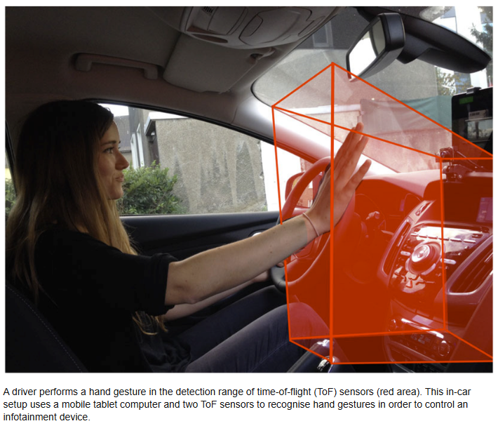
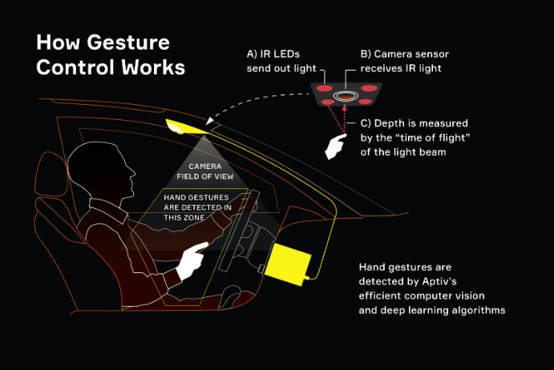
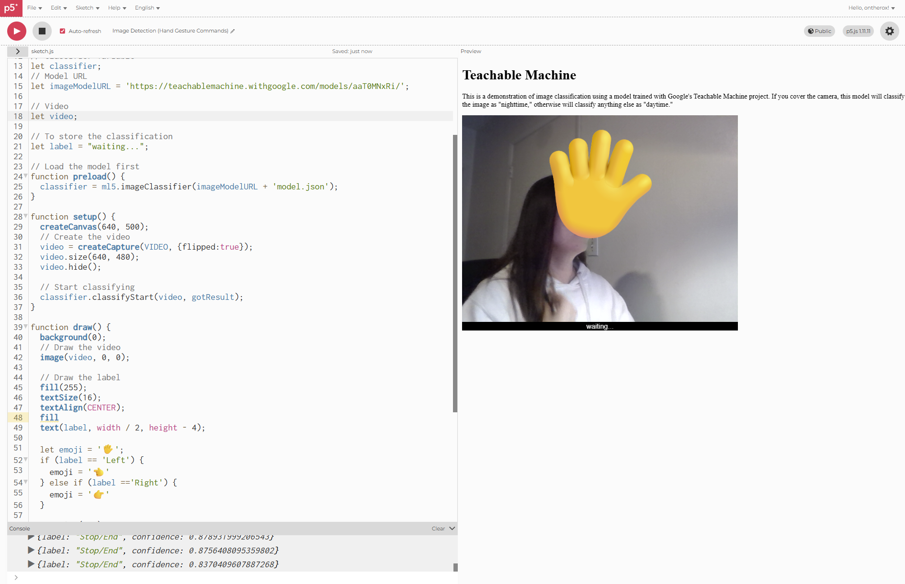
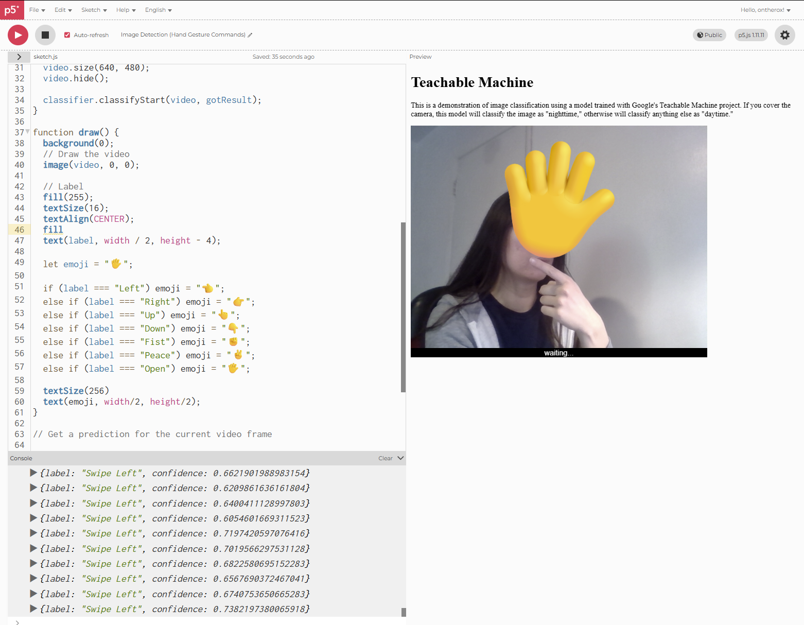
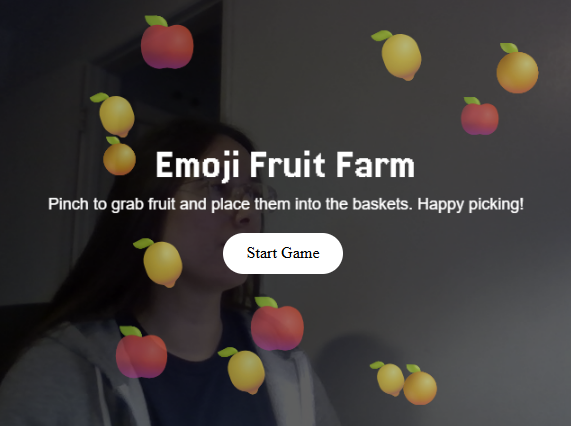

Roxanna's Week 12 P5js Homework
👍🖐️👆 From Hand Gesture Controls to Fruit Sorting Game🍊🍎🍋
In the process of attempting to make the hand gesture controls for an automotive HUD I realized I didn't have all of the necessary resources to accomplish this. So I opted for working on my back-up project.

Based on some of the in-class assignments utilizing image detection I was inspired to work on a project that focused on the user using various hand gestures to activate or initate certain functions.

In my attempts I quickly realized the struggles and limitations I was encountering with image detection.


Eventually in the following week's class I realized that image detection wouldn't be the best tool to achieve this. Instead hand tracking became the solution. At this point there was limited time with what was feasible to complete for my final project, so I decided to opt for my back-up plan, creating a sorting game! Feel free to check out my how I created this game by clicking here!
